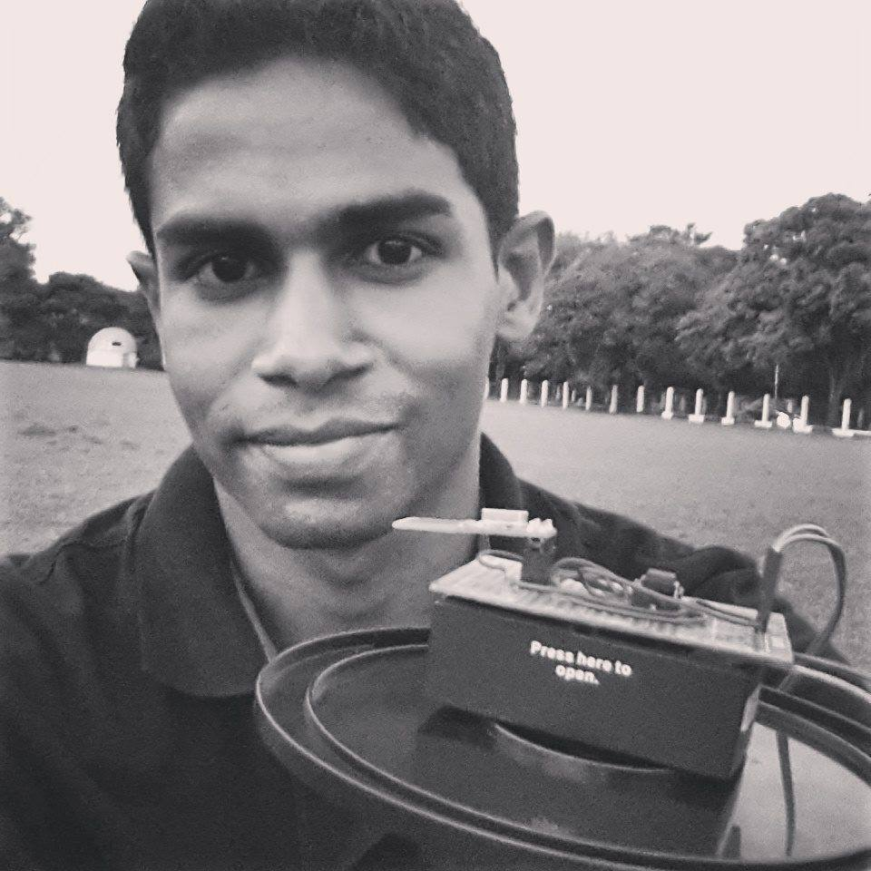

About Me
If you are a student who is interested in working with me in a research project, please check the Signal Insights Lab's page.
I'm a Senior Lecturer of Computer Science in University of Colombo School of Computing (UCSC), Sri Lanka. I did my PhD in the field of security and digital forensics from University College Dublin (UCD), Ireland in the year 2020. During my PhD studies, I worked with the Forensic & Security Research (ForSec) Group and Artificial Intelligence Solution for Cyber Security, Digital Forensics and Smart Systems (ASEADOS) lab of UCD. Before starting my PhD research, I worked with the Sustainable Computing Research (SCoRe) Group until the year 2017. I obtained my bachelors degree from the University of Colombo School of Computing in the year 2013.
My research interests revolve around Internet of Things, digital forensics, and security with a special interest towards side channels and covert channels. I'm an admirer of open-source movement and a heavy user of the GNU/Linux operating system. I love reading books on any topic that grabs my attention from science, history, fiction, politics, philosophy to everything else. Follow me on Goodreads, if you are an avid reader too. I'm occasionally writing a blog as well, which you can access in Blogspot.
Download my PGP public key from here for secure electronic communication with me.
Useful Links:
- Google Scholar:
- UCSC Web:
- Research Gate:
- ORCID:
- Mastodon:
 orcid.org/0000-0001-9558-7913
orcid.org/0000-0001-9558-7913"We make our world significant by the courage of our questions and the depth of our answers." --- Carl Sagan